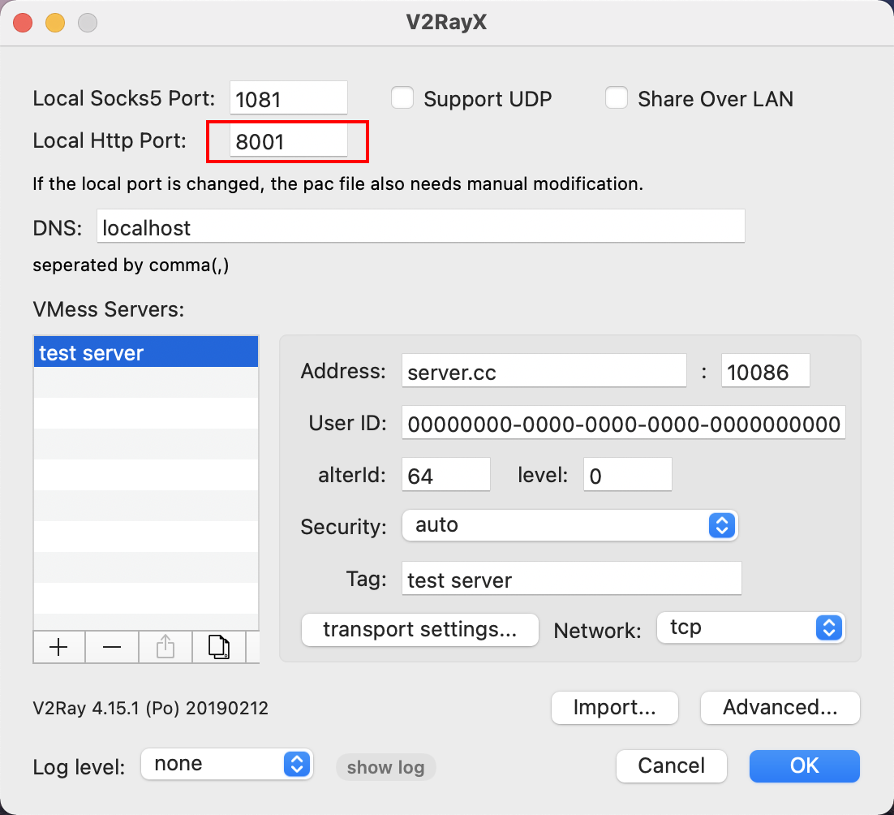
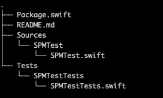

前言
Hi Coder，我是 CoderStar！
SPM 太卡顿
首先你得有一个翻墙工具，我用的是V2RayX，端口为8001。

我们使用下列命令将终端代理指向翻墙工具。
export https_proxy=http://127.0.0.1:8001 http_proxy=http://127.0.0.1:8001 all_proxy=socks5://127.0.0.1:8001
然后使用下列命令使 SPM 下载时走终端的 git，这时就会开始 reslove。xcodebuild -resolvePackageDependencies -scmProvider system
执行过程中可能会出现找不到对应版本的情况，这时候可以先用 Xcode 打开项目，再执行这些命令。
创建
我们可以先创建一个文件夹，然后进入文件夹后，执行swift package init命令，这时就会创建相应的 package，相关的名称也会自动以目录名为准。
目录结构如下:

接下来我们打开Package.swift，其会打开整个package，包含其他的文件，而不只是打开这个单文件
格式
我们需要使用一个Package.swift这个文件去描述一个 Swift Package。
每次修改之后，保存一下，Xcode就会自动去检查相关错误。
1 | // swift-tools-version:5.5 |
其他
目前一个 package 可以支持 OC、Swift
最后
要更加努力呀！
Let’s be CoderStar!